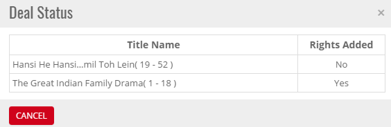


	<section>
		<article>
			<h2>Workflow Status<span></span></h2>
			<div>
				<p></p>
				<p>Shows a Hyper Link at Workflow Status Column. In case Rights was pending to be added. 

				<p>Click on the hyper link. Pop Up window Appears with Status of Rights and Revenue against Movie with Platform wise.

				<div class="triangle-border top">				
					
				</div>

				<p>After rights are added. System shows Status as <b>Rights added</b>. And Deal is ready to send for Approval if there are no validation errors.</p>
				
			</div>
		</article>
	</section>